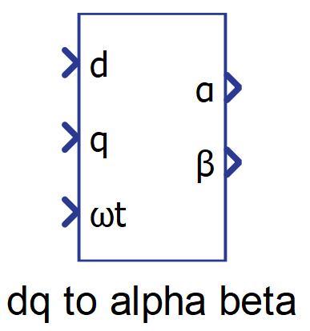

DQ to Alpha Beta
Description of the dq to alpha beta component in Schematic Editor, which performs a DQ to αβγ transformation.
Component Icon

Description
This component performs the dq to αβ transformation, also known as Park's inverse transformation. This transformation fixes the two synchronously rotating axes dq onto two stationary axes. The reference frequency is passed through the phase input ωt. The rotating frame alignment has the same two modes as the αβ to dq transformation. See Alpha Beta to DQ for more details.
dq to alpha-beta 0 alignment transformation matrix:
dq to alpha-beta -pi/2 alignment transformation matrix:
The matrix computation is implemented with and optimized code by computing the sine and cossine only once as follows:
Where for 0 alignment and ;
and for -pi/2 alignment and .
Ports
- d (in)
- Input signal of the component related to the d signal of the dq
frame.
- Supported types: real.
- Vector support: no.
- Input signal of the component related to the d signal of the dq
frame.
- q (in)
- Input signal of the component related to the q signal of the dq
frame.
- Supported types: real.
- Vector support: no.
- Input signal of the component related to the q signal of the dq
frame.
- ωt (in)
- Angular position of the dq rotating frame.
- Supported types: real, int, uint.
- Vector support: no.
- Angular position of the dq rotating frame.
- α (out)
- Output signal of the component related to the alpha signal of the alpha
beta sequence frame.
- Supported types: real.
- Vector support: no.
- Output signal of the component related to the alpha signal of the alpha
beta sequence frame.
- β (out)
- Output signal of the component related to the beta signal of the alpha
beta sequence frame.
- Supported types: real.
- Vector support: no.
- Output signal of the component related to the beta signal of the alpha
beta sequence frame.
Properties
- Rotating frame alignment
- Defines the alignment of the dq signals (-π/2 = “q”, 0 = “d”).
- Execution rate
- Type in the desired signal processing execution rate. This value must be compatible with other signal processing components of the same circuit: the value must be a multiple of the fastest execution rate in the circuit. There can be up to four different execution rates. To specify the execution rate, you can use either decimal (e.g. 0.001) or exponential values (e.g. 1e-3) in seconds. Alternatively, you can type in ‘inherit’ in which case the component will be assigned execution rate based on the execution rate of the components it is receiving input from.